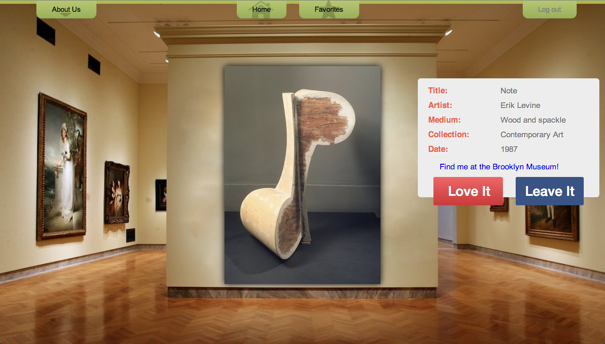

Discover some of Brooklyn Museum's most precious artwork through this customized randomizer application.
"Web design is art wrapped in technology." - James Weaver
Read more

ABC Data
Delivering Student Data that Counts
The ABC Data system offers a flexible and intuitive way to record and track sensitive performance-based data that is difficult to capture, critical to student success, and too important to leave to chance.